LANGCHAIN 마이그레이션 도우미 · 팀 저장소 기준 프로젝트 설명서 (역할 번호로 정리)
1번이 만든 폴더 구조와 2번이 모은 데이터 · 검색기만 기준으로 다시 썼습니다. 큰 그림, 예시 하나로 따라가는 전체 흐름, 팀 저장소 실물 지도, 지금 평가, 3번과 4번의 역할, 4번에게 필요한 역량, 당장 할 일, 용어를 담았습니다.
이것 세 줄만 기억해도 됩니다
1장
설명서를 쓰기 전에 네 가지를 물었습니다.
| 질문 | 내 답 | 판정 |
|---|---|---|
| 챗봇이 하는 일 | 옛 코드를 최신으로 고쳐 줌 | ✅ 정확 |
| 2번의 import 대응표 | 옛 위치 → 새 위치 목록 | ✅ 정확 |
| 3번과 4번의 차이 | 3번은 챗봇 속, 4번은 바깥 | ✅ 정확 |
| 자세히 알고 싶은 것 | 큰 그림과 4번 역량, 전체 흐름, 1번 폴더 · 2번 데이터, 당장 할 일, 용어 | → 2~10장 |
결론: 기본 개념은 이미 잡혀 있습니다. 부족한 것은 "실제 팀 파일에서 그게 어디에 있고, 어떻게 이어지는지"입니다. 그래서 이 설명서는 실제 예시 하나를 따라가며 설명합니다.
2장

| 내용 | |
|---|---|
| 문제 | ChatGPT 같은 AI에게 옛 LangChain 코드를 고쳐 달라고 하면, AI는 옛 버전만 기억해서 틀린 코드를 주고, 틀린 줄도 모릅니다 |
| 해결 | ① 최신 문서와 이사 목록에서 근거를 찾아 고치고 ② 고친 코드를 실제로 실행해 확인하고 ③ 틀리면 다시 찾아 다시 고침 |
| 증명 | 같은 옛 코드 여러 개를 일반 AI와 우리 챗봇에 넣고, 같은 기준으로 성공률을 비교 (4번) |
주방 비유: LangChain은 도구 세트, import는 "몇 번 서랍에서 도구를 꺼내라", 버전 업데이트는 도구가 다른 서랍으로 이사 간 것입니다. 2번은 이사 목록과 안내서, 3번은 레시피를 고치고 서랍을 직접 열어 확인하는 요리사, 1번은 주방 동선, 4번은 손님 테이블과 심사위원입니다.
3장
사용자가 아래 옛 코드를 넣었다고 해 봅시다.
from langchain.chat_models import ChatOpenAI
from langchain.chains import LLMChain
from langchain.prompts import PromptTemplate
| 단계 | 하는 일 | 이 예시에서 | 담당 · 팀 파일 | 지금 상태 |
|---|---|---|---|---|
| ① analyzer | 코드에서 import 경로 뽑기 | langchain.chat_models.ChatOpenAI 등 3개 |
3번 · src/agents/analyzer.py |
빈 파일 |
| ② retriever | 이사 목록에서 새 위치 찾기 + 문서 검색 | 아래 표 (2번 검색기를 실제로 돌린 결과) | 2번 · src/rag/retrieval/ |
✅ 있음 |
| ③ rewriter | 근거를 보고 AI가 코드 다시 쓰기 | ChatOpenAI는 새 서랍으로, LLMChain은 prompt | llm으로 |
3번 · src/agents/rewriter.py |
빈 파일 |
| ④ verifier | 새 코드를 실제로 실행해서 확인. 실패하면 ②로 (실패한 근거는 빼고, 범위를 넓혀) | import 성공? 기능 이름 있음? | 3번 · src/agents/verifier.py |
빈 파일 |
| ⑤ report | 새 코드 + 바뀐 곳 + 근거 + 시도 횟수 정리 | 화면에 보여 줄 결과 | 미정 (3번 또는 4번) · src/agents/report.py |
빈 파일 |
| 연결 | ①~⑤를 순서대로 잇고, ④에서 다시 갈지 판단 | – | 1번 · src/graph/supervisor.py |
틀만 있음 |
| 화면 · 평가 | 사용자에게 보여 주기, 일반 AI와 비교 | – | 4번 · app.py, (평가 폴더 새로) |
시작 전 |
② 2번 검색기를 실제로 돌린 결과 (API 키 없이 되는 "이사 목록 찾기" 부분)
| 옛 위치 | 새 위치 | 종류 | 근거 ID | 대안 |
|---|---|---|---|---|
langchain.chat_models.ChatOpenAI |
langchain_openai.ChatOpenAI |
native (최신 방식) | imap-02229b7d73 |
– |
langchain.chains.LLMChain |
langchain_classic.chains.LLMChain |
classic_fallback (옛 창고) | imap-41c19d624a |
prompt | llm |
langchain.prompts.PromptTemplate |
langchain_core.prompts.PromptTemplate |
native | imap-8ed4309a81 |
– |
읽는 법: LLMChain은 1.x에서 없어져서 옛 창고(classic)에만 남았습니다. 그래도 2번이 대안(prompt | llm)을 같이 적어 두어서, 3번 rewriter가 최신 방식으로 바꿀 수 있습니다. 검색기는 이 대안으로 문서도 더 찾아서 함께 넘겨줍니다.
4장
SKN35-3rd-4Team/
├── app.py print('Hello World!') ← 화면 자리 (4번)
├── pyproject.toml 필요한 패키지 목록 (uv)
├── .env.example OPENAI_API_KEY 자리 (각자 .env 를 만들어 키를 넣음)
├── data/ 데이터 (2번)
└── src/
├── agents/ analyzer · retriever · rewriter · verifier · report (단계별 파일, 아직 비어 있음)
├── graph/
│ ├── state.py MigrateState (단계끼리 주고받는 정보 모양)
│ ├── nodes/ (비어 있음)
│ └── supervisor.py StateGraph 틀 (노드 연결 전)
├── prompt/ AI에게 줄 지시문 (비어 있음)
└── rag/ 검색 관련 (2번)
State 읽는 법: 지금 MigrateState는 old(옛 위치), new(새 위치), evidence_id(근거 ID), kind(native / classic_fallback)로, 이사 한 건의 모양입니다. 2번 대응표의 한 줄과 딱 맞습니다. 그래프 전체가 주고받을 정보(입력 코드, 근거 목록, 새 코드, 검증 결과, 시도 횟수)는 1번이 앞으로 채울 것으로 보입니다 → 회의 질문거리.
2번이 공유한 데이터 출처 4가지와 실제 파일을 맞춰 보면 이렇습니다.
| 단계 | 2번이 말한 출처 | 하는 일 | 폴더 | 결과 |
|---|---|---|---|---|
| 1 | PyPI 패키지 코드 + langchain-cli 변환 규칙 | 버전별 도구 목록을 뽑아 import 대응표 만들기 (@deprecated 정보, 대안 포함) |
src/rag/import_map/ |
import_map.jsonl 9,155줄 |
| 2 | 최신 공식 문서 (v1 마이그레이션 가이드 포함) | docs.langchain.com Python 문서 수집 | src/rag/docs_collect/ |
271개 |
| 3 | 구버전 마이그레이션 가이드 (0.3.30 태그) | 체인 · 메모리 · 에이전트 옮기는 법 문서 수집 | 〃 | 24개 |
| 4 | – | 검색하기 좋게 조각(청크) 내기 | src/rag/chunking/ |
chunks.jsonl 11,903개 |
| 5 | – | 조각을 숫자로 바꿔(임베딩) 벡터 DB(Chroma)에 저장 | src/rag/embedding/ |
data/vectordb/chroma/ |
| 6 | – | 검색기: 이사 목록 정확 매칭 + 문서 하이브리드 검색 | src/rag/retrieval/ |
retrieve() → 근거 목록 |
검색기가 돌려주는 것 (근거 한 개의 모양): evidence_id(근거 ID), source(대응표 / 최신 문서 / 옛 가이드), text(내용), url(문서 링크, 문서 근거만), old · new · kind · alternative(대응표 근거만), score(점수). → 3번이 이걸 받아 고치고, 4번 화면은 이걸로 "근거"를 보여 줍니다.
5장
| 역할 | 진행 | 잘된 점 | 확인할 점 |
|---|---|---|---|
| 1번 그래프 · 백엔드 | 🟡 시작 | 폴더 구조, 브랜치 규칙(각자 브랜치 → dev PR) 정리 | State가 아직 "이사 한 건" 모양, 노드 연결 전 |
| 2번 데이터 · 검색 | 🟢 거의 완성 (PR 예정) | 대응표 9,155줄을 실제 import로 확인, 근거 ID 체계, 대안 필드, 실패 시 재검색 설계 | 벡터 DB 파일이 큼(약 133MB), 문서의 77%가 외부 연동 페이지 |
| 3번 변환 · 검증 | ⚪ 시작 전 | – | 2번 검색기 출력이 나와서 이제 시작 가능 |
| 4번 화면 · 평가 | ⚪ 시작 전 | – | 챗봇 없이도 되는 평가 준비부터 가능 |
한 줄 평가: 재료(2번)는 탄탄하게 준비됐고, 이제 요리(3번)와 동선(1번)이 따라붙어야 하는 시점입니다. 4번은 이 사이에 평가 준비를 해 두면 순서를 지키면서도 늦지 않습니다.
6장
| 3번 변환 · 검증 | 4번 화면 · 평가 | |
|---|---|---|
| 위치 | 챗봇 안 (②와 ⑤ 사이) | 챗봇 바깥 |
| 받는 것 | 2번 검색기의 근거 목록, 1번 State | 챗봇의 최종 결과(⑤ report) |
| 하는 일 | ① import 뽑기 ③ AI로 고쳐 쓰기 ④ 실행해서 확인, 실패하면 다시 | 화면에 보여 주기, 일반 AI와 같은 문제로 비교, 보고서 · 발표 |
| 만드는 파일 | src/agents/analyzer.py, rewriter.py, verifier.py, src/prompt/ |
app.py, 평가 폴더(새로), 보고서 · README · 발표 |
| 둘이 맞출 것 | 검증 기준: 어디까지 확인하나 (import만 / 기능 이름까지) | 같은 기준으로 채점해야 비교가 공정함 |
| 둘이 맞출 것 | 결과 모양: report에 무엇이 담기나 | 화면에 무엇을 보여 줄지 |
report(⑤)는 누가? 아직 정하지 않았습니다. 3번이 처음에 "평가 쪽에 report까지 들어간다"고 생각했었으니, 회의에서 정하면 됩니다.
7장
| 역량 | 왜 필요한가 | 지금 필요한 수준 | 연습 방법 |
|---|---|---|---|
| 프로젝트 흐름 설명 | 발표 · 보고서 담당 | 3장 표를 보지 않고 말하기 | 3장 예시를 소리 내어 설명 |
| 공정한 비교 실험 설계 | 평가의 핵심 | 같은 모델 · 같은 문제 · 같은 채점 기준 | 평가 규칙 초안 쓰기 (8장) |
| 결과를 숫자와 그래프로 | "얼마나 좋아졌나" 증명 | 성공률, 1회차 → 최종, 난이도별 | 엑셀이나 pandas로 표 하나 만들기 |
| Streamlit 기초 | 화면 담당 | 입력창, 버튼, 결과 표, 코드 보기 | 공식 튜토리얼 30분 |
| Python 코드 읽기 | 3번 결과 · 2번 검색기 이해 | 함수 입력과 출력만 읽을 수 있으면 됨 | 2번 retrieve() 입력 · 출력 보기 |
| Git 협업 | 팀 저장소에 PR | 브랜치 전환, 커밋, PR 올리기 | 내 브랜치에서 작은 문서 하나로 연습 |
| 질문으로 조율하기 | 4번은 모두의 결과를 받음 | "이렇게 하세요"가 아니라 "어떻게 생각하세요?" | 회의 질문 3개 준비 (8장) |
희망 직무와 연결: 기술영업 · AX 컨설턴트에게 필요한 "기술을 이해하고, 숫자로 증명하고, 쉽게 설명하기"가 4번 일과 그대로 겹칩니다.
8장
| 순서 | 할 일 | 어떻게 |
|---|---|---|
| 1 | 2번 데이터 · 검색 받아서 직접 돌려 보기 | 내 컴퓨터의 팀 저장소에서 git fetch → 2번 브랜치 확인 (PR이 dev에 합쳐지면 dev에서). .env에 내 OpenAI 키를 넣고, 아래 명령 실행 |
| 2 | 2번에게 짧은 반응 | "데이터 출처 정리 감사합니다! 검색 돌려 볼게요" + 깃 관리방 찬성 |
| 3 | 회의 질문 준비 | 아래 표 |
uv sync
uv run python -m src.rag.retrieval.hybrid "from langchain.chains import LLMChain"
회의에서 물어볼 것
| 누구 | 질문 |
|---|---|
| 1번 | "State에 입력 코드, 근거 목록, 새 코드, 검증 결과, 시도 횟수 같은 칸이 들어갈까요?" |
| 1번 | "화면(app.py)에서 그래프를 부를 때 어떤 함수를 부르면 될까요?" |
| 3번 | "검증은 어디까지 확인하실 계획이세요? 평가도 같은 기준으로 맞추려고요." |
| 다 같이 | "일반 AI랑 비교할 모델, 틀렸을 때 다시 시도 횟수, report 담당을 정해요." |
| 순서 | 할 일 | 팀 데이터 활용 |
|---|---|---|
| 4 | 평가 규칙 초안: 성공 기준, 같은 모델 · 같은 문제 · 같은 채점 | 3번과 검증 기준 맞추기 |
| 5 | 시험용 옛 코드 모으기 (쉬움 · 중간 · 어려움) | 2번이 모은 옛 가이드 24개의 "변경 전" 코드와 대응표(native / classic)로 난이도 나누기 |
| 6 | 일반 AI 실험: 시험 코드를 일반 AI에게 그대로 고쳐 달라고 하고 채점 | 비교 기준선 |
| 7 | 화면 틀: 무엇을 보여 줄지 그리기 (종이나 그림으로 먼저) | 2번 근거 모양(4장)으로 "근거" 칸 설계 |
| 순서 | 할 일 |
|---|---|
| 8 | 화면을 챗봇에 연결 (app.py, 1번 확인 후) |
| 9 | 우리 챗봇 실험 → 일반 AI와 비교 그래프 |
| 10 | 보고서 · README · 발표 자료, 데모 녹화 |
9장
| 누가 | 내용 | 4번에게 의미 |
|---|---|---|
| 2번 | 데이터 · 검색엔진을 2번 브랜치에 올림 | 8장 1번(직접 돌려 보기)을 할 수 있음 |
| 2번 | 데이터 출처 4가지 공유: PyPI 패키지 코드(대응표), langchain-cli 변환 규칙(대응표 보강), 최신 공식 문서(v1 가이드 포함), 0.3.30 옛 가이드(체인 · 메모리 · 에이전트) | 보고서의 "데이터" 부분에 그대로 쓸 수 있음 |
| 1번 | 2번에게 PR까지 올려 달라고 요청 | 곧 dev에 합쳐짐 → dev에서 받기 |
| 2번 | 깃 관리방을 만들자고 제안 | 찬성 의견 남기기 (4번도 나중에 PR을 올리니까) |
10장
| 용어 | 쉬운 뜻 | 팀 프로젝트에서 |
|---|---|---|
| LangChain | AI 앱을 만드는 파이썬 도구 세트 | 고쳐 줄 대상 |
| 마이그레이션 | 옛 버전 코드를 새 버전에 맞게 옮기기 | 프로젝트 이름 |
| import | 서랍에서 도구 꺼내기 | 대부분의 에러가 여기서 남 |
| deprecated | "곧 없어질 예정" 표시 | 2번이 대응표에 같이 기록 |
| native / classic_fallback / unresolved | 최신 위치 있음 / 옛 창고(langchain_classic)에만 있음 / 못 찾음 | 대응표 kind |
| RAG | 자료를 찾아보고 답하기 | ② retriever |
| 청크(조각) | 문서를 검색하기 좋게 자른 조각 | 11,903개 |
| 임베딩 | 글을 숫자 목록으로 바꿔 "뜻이 비슷한 것"을 찾게 함 | OpenAI text-embedding-3-small |
| 벡터 DB (Chroma) | 임베딩을 저장하고 비슷한 것을 찾는 창고 | data/vectordb/chroma/ |
| BM25 | 단어가 겹치는 정도로 찾는 옛날식 검색 | 임베딩 검색과 같이 씀 |
| 하이브리드 검색 · RRF | 두 검색 결과의 순위를 섞기 | 2번 검색기 |
| 근거 ID (evidence_id) | 근거 하나하나의 이름표 | imap-…, doc-… |
| LangGraph · StateGraph | 단계를 순서대로 잇는 작업 흐름도 | 1번 supervisor.py |
| 노드 · 엣지 | 흐름도의 단계 · 화살표 | ①~⑤가 노드 |
| State | 단계끼리 주고받는 정보 묶음 | 1번 state.py |
| report | 챗봇의 결과 정리 (영수증) | ⑤, 프로젝트 보고서와 다름 |
| baseline | 비교 상대 = 일반 AI | 4번 평가 |
| uv · pyproject.toml | 패키지 설치 도구 · 필요한 패키지 목록 | uv sync로 설치 |
| .env | API 키 같은 비밀 값을 넣는 파일 (Git에 올리지 않음) | OPENAI_API_KEY |
| 브랜치 · PR | 내 작업 공간 · "합쳐 주세요" 요청 | 각자 브랜치 → dev |
| Streamlit | 파이썬으로 웹 화면을 쉽게 만드는 도구 | 4번 app.py |
11장
답을 누르면 바로 알려 줍니다.
12장
체크한 내용은 이 브라우저에만 저장됩니다.